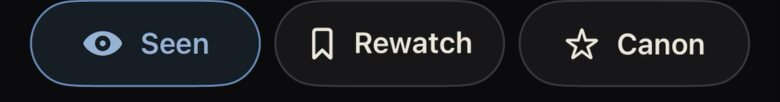
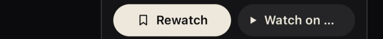
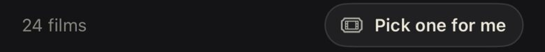
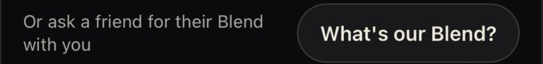
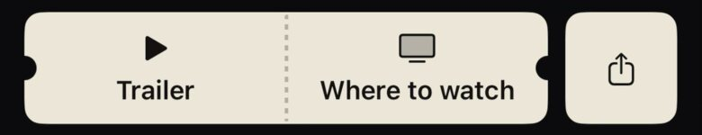
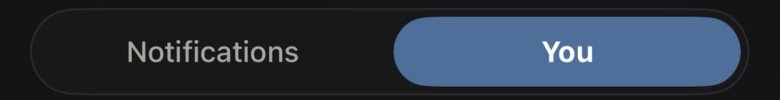
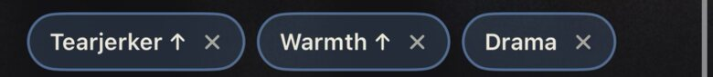

A visual reference sheet for the token sweep: the type scale against today's spread, the six buttons that replace about 21 iPhone button styles and 14 looks on screen, one icon set, and the spacing and radius scale. Counts are from montage origin/main (brand-pass-v1 inventory, re-checked at 938282d3). Once approved, CI fails new literals (stylelint plus a Swift grep).
Today: 60 distinct web font sizes and 27 on the iPhone, five web weights (400, 500, 600, 700, 800) and seven on the iPhone, and 36 letter-spacings. The tokens already exist (--fs-*, --t-*, Typo); only 92 of 716 web font: shorthands use them.
Plus 64, 72 and 92px, calc() and seven clamp()s. The iPhone adds 11.5, 46, 54 and 56. Weights 700 and 800 (209 uses) and black and heavy (55) have no place in the system.
Three weights: 400, 500 (Bodoni), 600 (UI emphasis). Three trackings: .14em on caps, 0 everywhere else, −.01em on Display. Named exceptions stay as they are: the match % and Blend % numerals, the wordmark, the archetype name, rank numerals and share-card art.
Today the iPhone has 21 ButtonStyles plus 393 inline .pressable buttons, and the web 113 button-like selectors with heights of 16, 18, 22, 26, 30, 32, 34, 36, 44, 46, 48 and 52. On screen that is about 14 looks:







An outline pill, a blue-tinted pill, a cream pill with an icon, a dark pill, a cream ticket strip, a blue segment and blue-edged chips. And not shown: the oxblood Canon fill, the oxblood destructive pill (OxbloodButtonStyle, WatchDeleteStyle) and Header E's grey radius-9 pair.
The one thing to do on a view. At most one per view. Large 50 at a drawer's foot, Standard 44, Compact 34.
PrimaryButtonStyle, MaybePrimaryStyle, HeaderButtonStyle(primary), ActivityPill "Follow back"Every other action. When "on" it takes the one chosen state. Destructive is Secondary with danger words, never a fill.
SecondaryButtonStyle, CanonButtonStyle, HeaderButtonStyle, OxbloodButtonStyle, WatchDeleteStyle, DangerButtonStyle, OAuthButtonStyleInline and secondary links: "See all", "Not now", "Start over". Blue when it goes somewhere, muted when it dismisses.
QuietButtonStyle, inline .pressable text buttons, "+ Log a watch"Filters, moods, answers, "+ Add". On is the one chosen state. Never the main action.
ChipButtonStyle, ActivityPillStyle, QuestionPressStyle, Pitch's understood-as chipsCommitment moments only: pick for me, post a take, lock in tonight. And, as a strip, every 2–4 option switch (fix 1).
TakeTicketStyle, the Tonight ticket CTAs, SegmentPill, .segBack, close, share, more, bell. One size, a 44 tap target. Glass on art, panel on the ground.
CirclePress, IconCircle, the glass "▶ Trailer" on posters becomes SecondaryNot looks, so they fold into one shared press behaviour: PressableStyle, PressScale, AcctRowPress, ListRowPressStyle, AnyButtonStyle. AppleButtonStyle stays as Apple requires.
Today the iPhone uses SF Symbols 120 times (42 names) and Lucide 81 times (26 names); the web uses Lucide. The same "close" is xmark on one screen and Lucide x on the next, at different weights.
Icon("…") already loads Lucide.apple.logo on Sign in with Apple.Today: 593 truly off-scale spacing values on the web and 514 on the iPhone (5, 7, 9, 11, 13, 15, 18, 20, 22, 26, 28, 30…), and 51 web and 25 iPhone corner radii (2px ×67, 4px ×53, 3px ×38, 14px ×17, plus 5, 7, 9, 10, 13, 16, 18, 19, 20, 26, 28, 40).
--sp-* / Space.s*Allowed off the scale: 2 (hairline nudges) and the 6 / 10 / 14 insets inside controls only (chip and button padding). Retire: 5, 7, 9, 11, 13, 15, 18, 20, 22, 26, 28, 30, 34, 36, 38 and above, each to its nearest step.
--radius-* / Theme.radius*Faces: min(6, 25%), as today (rule 142). Retire: 2, 3, 4, 5, 7, 9, 10, 13, 14, 16, 18, 19, 20, 26, 28, 40, and Theme.btnR = 12 (buttons are pills). The Montage switch takes the card's 8, not a new 7. Offset: one, 5px (fix 7).
apple.logo stays. Or SF Symbols on the iPhone and Lucide on the web.OxbloodButtonStyle and WatchDeleteStyle). Header E's grey radius-9 pair becomes Secondary Compact. Yes or no.Theme.btnR retired. Yes or no.font-size, border-radius, hex and rgba literals and off-scale padding; a Swift grep on .system(size:, cornerRadius: literals, Color(hex: outside Theme.swift and Image(systemName:. Existing literals are allowed until each screen is swept. Yes or no.